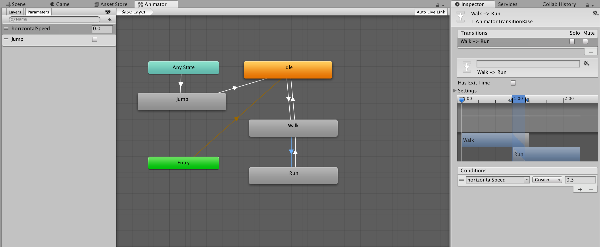

public void SetFloat(string name,
float value);
public void SetFloat(string name,
float value,
float dampTime,
float deltaTime);
public void SetFloat(int id,
float value);
public void SetFloat(int id,
float value,
float dampTime,
float deltaTime);
Parameters
| name | The parameter name. | |
| id | The parameter ID. | |
| value | The new parameter value. | |
| dampTime | The damper total time. | |
| deltaTime | The delta time to give to the damper. |
Description 描述
Send float values to the Animator to affect transitions.
Use SetFloat in a script to send float values to the Animator in order to activate transitions. In the Animator, define what values affect how certain animations transition. This is useful in various situations, especially in animation cycles such as movement animations where you might require the character to walk or run depending on the button pressure applied.
//The code below shows how to send the horizontal value of the controller or keys to the Animator. //You must assign the same parameter name in the Animator as you set in SetFloat, in this case “horizontalSpeed”. You must also handle the transition conditions in the Animator, to tell which values should cause each transition. //For example, the walking animation triggers when the horizontal value is above 0, and the running animation triggers when the horizontal value reaches past 0.5. Assigning animations to states are also done in the Animator.
using UnityEngine;
public class Example : MonoBehaviour { Animator m_Animator; float m_HorizontalMovement;
void Start() { //Get the animator, which you attach to the GameObject you are intending to animate. m_Animator = gameObject.GetComponent<Animator>(); }
void Update() { //Translate the left and right button presses or the horizontal joystick movements to a float m_HorizontalMovement = Input.GetAxis("Horizontal"); //Sends the value from the horizontal axis input to the animator. Change the settings in the //Animator to define when the character is walking or running m_Animator.SetFloat("horizontalSpeed", m_HorizontalMovement); } }

Above is an example setup of the Animator for accepting floats.